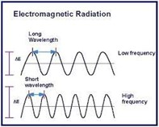
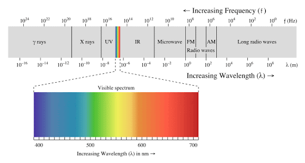
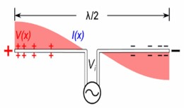
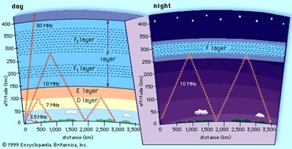

Introduction
You are probably reading this article using your phone or your computer, you might also have just received a notification at the same exact time from a far place. These two previous actions were made using a signal transmitted by nothing that we called electromagnetic waves. As a matter of fact, these waves are used either for communication (radio waves, satellites, network connection…) or for doing analysis on stone (X-rays). So, what are electromagnetic waves? what are Radio waves? What differs from one EM to another? How can we produce these waves?
In this article, you will find the answers to all these questions and more.
What are electromagnetic waves?
Before defining what EM stands for, we should, first of all, introduce the scientific meaning of waves. Mechanical waves define the propagation of energy generated due to a disturbance or vibration in matter: whether it’s a solid, a gas, a liquid, or plasma. The matter that waves are traveling through is called a medium. For example, Water waves travel through liquids, whereas Sound Waves travel through gas (air for instance). These mechanical waves propagate through a medium by causing the molecules to bump into each other. Thus, the presence of this medium is mandatory. For example, sound waves cannot travel in the vacuum of space.
In another hand, and unlike mechanical waves, EM waves do not require a medium to spread through. They, definitely, might be transmitted through the vacuum with the speed of light. Furthermore, these kinds of waves arise from a changing magnetic field and, or a changing electric field.
According to Maxwell equations which prove the co-existence of the two fields.
What differs from one EM to another?
An electromagnetic wave is characterized whether by its wavelength or its frequency. The wavelength is the distance between one wave crest to the next (when the wave is evolving along the space axis at a certain point of time). While the number of these crests per second, at a fixed position, is called the frequency. So, when the wavelength increases the frequency will decrease. These two parameters are linked to one another by the following equation: Wavelength = Speed of Light * Frequency
Using these characteristics we can divide EM waves to eight zones according to their wavelengths (as the application of an EM wave depend only of their wavelength -frequency-), that we name as follow : RADIO WAVES, MICROWAVES INFRARED ,VISIBLE LIGHT, ULTRAVIOLET, X-RAYS, GAMMA RAYS.
These bands are not set randomly. As well known, each zone of the above owns its specific characteristics depending on the wavelengths. Those wavelengths that affect the dominance of absorption, transmission, and reflection of every given EM wave that penetrate into a given medium.
In this article we will only deal with the domain of radio waves since they are the most used in modern technology.
How can we produce these waves?
Electromagnetic waves are produced whenever electric charges are accelerated, and as long as the acceleration of those through space produces a variation of the electric field (Which involves once again a variation of the magnetic one). Therefore, in order to generate an electromagnetic wave, we let an alternating current flow through a wire that we call an antenna. This antenna must have a length that measures half of the desired wavelength. The frequency of the EM wave created flowing this process will be equal to the frequency set for the alternating current.
In this article we will only treat the case of Radio waves best known of the variety of their applications in communication.
what are Radio waves?
As we say previously. wave from the type of the electromagnetic spectrum at lower frequencies it goes from as low as 3 Hz and as high as 1 gigahertz. These correspond to wavelengths range from thousands of meters to 30 cm. best-known for their use in communication technologies, such as television, mobile phones and radios. These devices receive radio waves, then decrypt it to a mainful signal and convert them to mechanical vibrations in the speaker to create sound waves, an image on your phone or to execute some tasks.
As we said before, EM wave’s applications depend on the frequency. the Radio wave is in his turn divided to many zones in terms of it to respond at a specific need in communication.
The table below shows the zones and the Common uses of each band:

To sum up, we can distinguish from four types: Satellite communication, terrestrial communication and Maritime communication.
Terrestrial communication
Radio waves which are used to send and receive data from two devices in earth. And because of the curvature of the earth, we cannot have a straight line linking any two point without having to penetrate the ground. So, the scientists have innovated a solution to transmit data (voice, video) using radio waves. as it can travel the world in a zig-zag pattern. (as we can see in the figure bellow)
Satellite communication
In this case, EM wave must have the highest frequency in the domain of radio waves. because it must penetrate the atmosphere smoothly (because the energy of EM increase in terms of frequency). As we can see in the figure radio reflect in the ionosphere in a specific layer depending on its frequency (the more the frequency its high the more the latitude of the reflecting layer is high). And it can penetrate the atmosphere if the EM has a higher frequency, and the incident angle is low, and the frequency is high.
Maritime communication
This technology not only covers lands but also maritime communication to communicate with Submarines. VLF with his largest wavelength can penetrate some medium with higher density like water (it can penetrate sea water to a depth of approximately 20 meters) and reflected by lower ionosphere.
As it known these waves are used to transmit much information from radio and television that contain many Chanel. So, to avoid interference of radio waves in these many applications we divide the range of radio waves to many smaller bands. Witches give the ability of a specific channel radio to have its own frequency to broadcast the voice in a large space. for more information visit this table .